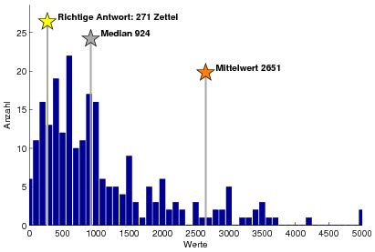
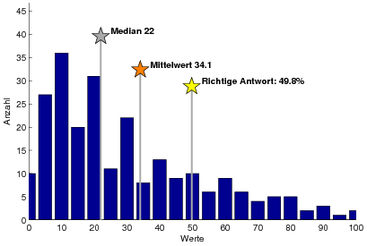

Schätzquiz Oldenburg
Am 24. September 2010 fand zwischen 17-20 Uhr ein Schätzquiz bei der “Nacht der Wissenschaft” auf dem Campus Wechloy an der Uni Oldenburg statt. Es ging um das Phänomen der Weisheit der Masse (siehe zum Phänomen und den Original Papers von 1907 auch meinen Bericht aus Bremen und das auf der Nacht der Wissenschaft präsentierte Poster). In Oldenburg war allerdings nicht viel von der Weisheit der Masse zu sehn. Auf diesem Schätzzettel konnte man Schätzen wieviele dieser Zettel insgesamt abgegeben werden.
Es wurden 271 Zettel abgegeben.
Hier alle SchätzerInnen, die besser waren als der Median aller Schätzungen (924).
| Wert | Abstand | ||
|---|---|---|---|
| 1. | Dennis Hinrichs | 270 | 1 |
| 2. | Carina Pfeiffer | 275 | 4 |
| 3. | Natallia Krauchanka | 280 | 9 |
| 4. | Ziemann | 250 | 21 |
| 4. | Moritz | 250 | 21 |
| 6. | kein Name angegeben | 300 | 29 |
| 7. | Jens Winkel | 239 | 32 |
| 8. | Felix Bayer | 235 | 36 |
| 9. | Thomas Dittrich | 310 | 39 |
| 10. | Mathias Woltrink | 230 | 41 |
| 10. | Tante Susi | 312 | 41 |
| 12. | kein Name angegeben | 320 | 49 |
| 13. | Name nicht lesbar | 220 | 51 |
| 14. | Karin Ideler | 323 | 52 |
| 15. | kein Name angegeben | 217 | 54 |
| 15. | Gunnar Shoyer | 325 | 54 |
| 15. | Betinna Kewitz | 217 | 54 |
| 18. | Horst Metschl | 327 | 56 |
| 18. | Sarah Kern | 327 | 56 |
| 20. | Julia Witt | 206 | 65 |
| 21. | Jennifer Oberler | 200 | 71 |
| 22. | Konrad Schultz | 197 | 74 |
| 22. | Mareike Weinberg | 197 | 74 |
| 24. | Lena Köpcke | 350 | 79 |
| 24. | Tippner | 350 | 79 |
| 26. | Alexandra Wolff | 190 | 81 |
| 27. | Olsowski | 183 | 88 |
| 28. | Timo von Reeken | 360 | 89 |
| 29. | kein Name angegeben | 180 | 91 |
| 30. | Welker | 370 | 99 |
| 31. | Hendrik Wöst | 375 | 104 |
| 31. | Christel Sahr | 375 | 104 |
| 31. | Martina van den Hooven | 375 | 104 |
| 34. | kein Name angegeben | 163 | 108 |
| 35. | Hans Alexander | 385 | 114 |
| 36. | Wins | 390 | 119 |
| 37. | Josephine Kölling | 150 | 121 |
| 37. | Jana Neumann | 150 | 121 |
| 39. | Maike Wennemer | 394 | 123 |
| 40. | M. von Reeken | 395 | 124 |
| 41. | Alexander Szefczyk | 398 | 127 |
| 41. | Lara Schroeder | 398 | 127 |
| 43. | kein Name angegeben | 400 | 129 |
| 44. | Barbara Liefländer | 138 | 133 |
| 45. | Jonas Peschke | 130 | 141 |
| 46. | Günter Lück | 120 | 151 |
| 46. | kein Name angegeben | 120 | 151 |
| 46. | Regina Kahla | 120 | 151 |
| 49. | Kristina Siefken | 423 | 152 |
| 50. | Thomas Maurer | 425 | 154 |
| 51. | Annika Budden | 436 | 165 |
| 52. | Susanne Knaack | 437 | 166 |
| 52. | Jan-Henrik Bergmann | 105 | 166 |
| 54. | Tilmann T. | 450 | 179 |
| 54. | Chrisitin Langermann | 450 | 179 |
| 54. | Kathrin Becker | 450 | 179 |
| 57. | kein Name angegeben | 91 | 180 |
| 58. | kein Name angegeben | 75 | 196 |
| 59. | Hai Hoang | 472 | 201 |
| 60. | Traute Wöst | 475 | 204 |
| 61. | Name mehrfach, Downgrade auf Schlechtesten | 60 | 211 |
| 62. | Lars Henning Heß | 489 | 218 |
| 63. | Franziska Hemken | 496 | 225 |
| 64. | Jan Christoph Bernack | 500 | 229 |
| 64. | Marita Wins | 500 | 229 |
| 64. | Mareike und Christine Bekaan | 500 | 229 |
| 64. | Carolin Würtz | 500 | 229 |
| 68. | Name mehrfach, Downgrade auf Schlechtesten | 30 | 241 |
| 69. | Benno W. | 513 | 242 |
| 70. | keine Name angegeben | 521 | 250 |
| 70. | Torsten Germer | 521 | 250 |
| 72. | Sathurja | 20 | 251 |
| 72. | kein Name angegeben | 20 | 251 |
| 72. | Louis Claasen | 20 | 251 |
| 75. | Fabian | 15 | 256 |
| 76. | kein Name angegeben | 5 | 266 |
| 77. | Maren Hunecke | 538 | 267 |
| 78. | Britta Wehen | 555 | 284 |
| 79. | Wiebke Morgenstern | 557 | 286 |
| 80. | Leonie Schneider | 563 | 292 |
| 81. | Golob | 570 | 299 |
| 82. | Anke Gwozdz | 572 | 301 |
| 83. | Norina Wulff | 580 | 309 |
| 84. | Anneliese Ibbeken | 581 | 310 |
| 85. | Andreas Wulff | 586 | 315 |
| 86. | Katharia Lueders | 598 | 327 |
| 87. | Yvonne Pfeiffer | 600 | 329 |
| 87. | Julian Siemer | 600 | 329 |
| 87. | Wins | 600 | 329 |
| 90. | Anna Inden | 603 | 332 |
| 91. | Axel Husch | 613 | 342 |
| 92. | kein Name angegeben | 614 | 343 |
| 93. | Charlene Waechter | 621 | 350 |
| 94. | Daniel Fuhrhop | 625 | 354 |
| 95. | Tanja Burgmer | 628 | 357 |
| 96. | Wolfgang Wenzel | 635 | 364 |
| 97. | Danielle Gliza | 650 | 379 |
| 97. | Ewald Müller | 650 | 379 |
| 97. | Ingo Barelmann | 650 | 379 |
| 100. | Torben Wendt | 654 | 383 |
| 101. | Name nicht lesbar | 658 | 387 |
| 102. | Mat Steckel | 676 | 405 |
| 103. | Jens de Boer | 685 | 414 |
| 104. | Jochen Arensbrust | 698 | 427 |
| 104. | Yvonne Weilke | 698 | 427 |
| 106. | Stefan Spiekermann | 700 | 429 |
| 107. | kein Name angegeben | 733 | 462 |
| 108. | Kevin König | 746 | 475 |
| 109. | SuNA | 749 | 478 |
| 110. | R. Hornberger | 764 | 493 |
| 111. | Julie Schweer | 800 | 529 |
| 111. | kein Name angegeben | 800 | 529 |
| 111. | Katharina Kaschel | 800 | 529 |
| 114. | F. Schmid | 812 | 541 |
| 115. | kein Name angegeben | 836 | 565 |
| 116. | Felix Steckel | 843 | 572 |
| 117. | Justus Peschke | 850 | 579 |
| 117. | Patrick Zeller | 850 | 579 |
| 117. | kein Name angegeben | 850 | 579 |
| 117. | Eiken | 850 | 579 |
| 121. | Lara Jerowski | 858 | 587 |
| 122. | Jürgen Willens | 876 | 605 |
| 123. | Jürgen Boese | 888 | 617 |
| 124. | kein Name angegeben | 890 | 619 |
| 125. | Herma Manssen | 893 | 622 |
| 125. | Erik Rochsburg | 893 | 622 |
| 127. | Christian van den Hoorln | 897 | 626 |
| 128. | Renate Gayk | 899 | 628 |
| 128. | Oliver Kaboth | 899 | 628 |
| 130. | Sonja Pals | 900 | 629 |
| 131. | Name nicht lesbar | 921 | 650 |
| 131. | Inga Rochsburg | 921 | 650 |
| 133. | kein Name angegeben | 922 | 651 |
Als Bonus-Frage konnte man schätzen, wieviel Prozent der Schätzungen besser sind als die “Weisheit der Masse”. Die Weisheit der Masse wurde als Median aller Schätzungen definiert.
Das waren 49,8%.
Die besten SchätzerInnen der Bonus-Frage waren:
| Wert | Abstand | ||
|---|---|---|---|
| 1. | Bajus | 49.90 | 0.09 |
| 2. | Felix Bayer | 50.00 | 0.19 |
| 2. | Timo von Reeken | 50.00 | 0.19 |
| 2. | kein Name angegeben | 50.00 | 0.19 |
| 2. | Maike Wennemer | 50.00 | 0.19 |
| 2. | kein Name angegeben | 50.00 | 0.19 |
| 7. | kein Name angegeben | 49.00 | 0.81 |
| 7. | Eiken | 49.00 | 0.81 |
| 9. | Josephine Kölling | 51.00 | 1.19 |
| 9. | Hedda de Boer | 51.00 | 1.19 |
Die Ergebnisse wurden beim Science Slam mit dieser Präsentation vorgestellt.
Die Verteilungen der Schätzungen (im Histogramm) zeigt eine deutliche Rechtsschiefe. Die meisten Schätzungen sind niedrig, einige große Schätzungen allerdings extrem groß. Rechts fehlt sogar noch sehr viel vom Histogramm. Es gab auch einige Schätzungen im 10.000er Bereich und das Maximum war 110.000.
[caption id=“attachment_237” align=“aligncenter” width=“411”] Histogramm Schätzungen Anzahl Zettel[/caption]
{kind=link}
Fazit zur Schätzfrage: Mit der Weisheit der Masse war es bei der Nacht der Wissenschaft nicht so doll. Die meisten überschätzten die Anzahl der abgegebenen Zettel deutlich. Unsere Vermutung ist, dass die meisten Leute zu stark auf die Anzahl der Besucher bei der Nacht der Wissenschaft geschaut haben und zu wenig auf den administrativen Aufwand mit wenigen Leuten in 3 Stunden viele Leute zum Ausfüllen zu motivieren. Mit mehr Personal hätten wir sicherlich auch 927 (wie der Median der Masse sagte) erreichen können.
In der Bonus-Frage war nach eine Prozentzahl gefragt. Die Verteilung der Antworten ist also nicht nach einer Seite offen, sondern durch 0 und 100 begrenzt. Hier zeigt sich das Bild anders herum: Die meisten Leute schätzten zu tief, wie sowohl Median also auch Mittelwert zeigen. Die Verteilung ist aber rechtsschief genauso wie vorher.
[caption id=“attachment_241” align=“aligncenter” width=“409”] Histogram Schätzungen “Wieviel Prozent sind besser als die Masse?”[/caption]
{kind=link}
Fazit zur Bonus-Frage: Auch bei der deutlich komplizierteren Bonus-Frage ist von der Weisheit der Masse nicht sehr viel zu sehen. Die richtige Antwort liegt bei knapp 50%. Dass das so sein muss, lässt sich im Prinzip schon an der Abbildung zur Verteilung der Schätzungen zur ersten Frage ablesen. Der Medianliegt bei 927, die richtige Antwort bei 271 und eine natürliche Untergrenze bei 0. Das heißt, alle unterhalb das Medians sind besser als der Median, weil es nach unten keine größeren Abweichungen geben kann. Das sind 50% (bzw. die nächst kleinere mögliche Prozentzahl) nach Definition des Median. Es sieht so aus, als hätte sich die Person mit Gewinnschätzung (49,9%) das genauso überlegt! Herzlichen Glückwunsch.
Fazit: Die aggregierte Masse der Besucher hat bei der Nacht der Wissenschaft die Schätzfrage schlecht beantwortet und gleichzeitig die Güte der Schätzungen der Masse deutlich überschätzt. Beim Schätzquiz in Bremen sah das anders aus. Da gab es allerdings die zweite Frage noch nicht.
Vielleicht fragt sich noch jemand: Warum wurde eigentlich der Median und nicht der Mittelwert als “Weisheit der Masse” in der Bonus-Frage gewählt? Es hätte dann eine Gewinnmöglichkeit bei der Bonus-Frage durch folgende Antworten gegeben: Schätzfrage=10^100 (=1 Googol), Bonusfrage=99,9%. Der Mittelwert (als Weisheit der Masse) wäre dann auch im Bereich des Googol gewesen und somit wären alle Leute besser als der Mittelwert der Masse, bis auf den einen mit der schlauen Idee. Wenn mehrere die gleiche die Idee haben ergibt sich ein interessantes Spiel darum, wer welche Zahl als höchste Zahl ansieht… Das ganze wurde aber durch die Wahl des Medians vermieden. Eine clevere Gruppe von SchätzerInnen war übrigens tatsächlich am Überlegen, mich so ähnlich reinzulegen, hat dann aber meine Sicherheitsmaßnahme bemerkt.
PS: Danke! An Anne Krull, Sebastian Schneider und Kamil Marcinkiewiecz fürs Helfen.
PPS: Die Daten sind hier.